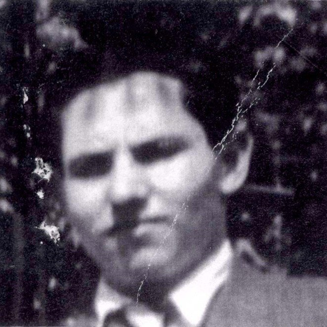

Portrait d’archive
Ernest Micmacher
Ernest MICMACHER
Nom : MICMACHER
Prénom(s) : Ernest
Date naissance : 04/03/1923
Âge (ans) : 19
Lieu naissance : Budapest
Pays ou département : Hongrie
Lieu rassemblement : Fort-Barreaux
Dernière adresse : 9 rue Nasen
Ville : Décines
Code postal : 69150
N° Convoi : 27
Date déportation : 02/09/1942
Informations diverses : Ernest né le 04/03/1923 à Budapest était le fils de Fanny Micmacher née Friedmann (14/04/1896 à Zboriv, Ternopil, Ukraine) et de Leibus Micmacher (30/12/1899 à Pilica, Pologne) et le frère d’Arthur Micmacher (21/04/1928 à Paris) et d’Henri (29/06/1925 à Paris). Avant guerre, la famille Micmacher vivait à Paris, 218 avenue de Versailles 75016. Lejbus et Fanny et leur fils Arthur ont été arrêtés le 12 juillet à Paris. Fanny est déportée de Beaune-la-Rolande le 5 août 1942 par le convoi n°15, avec son mari Leibus, et leur fils Arthur par le convoi n°22. Tous ont été gazés à Auschwitz. Ernest est arrêté à Décines le 24/08/1942 puis interné à Lyon le 28/08/1942. Il est déporté de Drancy vers Auschwitz par le convoi 27 le 02/09/1942.
Henri Micmacher, le plus jeune fils s'est caché successivement à Châlus (Haute Vienne) en 1942 puis à Décines (agglomération de Lyon) en 1943 et enfin à Murat-le-Caire (Puy-de-Dôme) en 1944. Il sera le seul survivant de la famille. Il décède le 24/08/1978 à Chalon-sur-Saône (Source: Claude, fils d’Henri Micmacher).
Micmacher (Ernest), né le 4 mars 1923 à Budapest (Hongrie), décédé le 2 septembre 1942 à Auschwitz (Pologne) et non le 28 août 1942 à Drancy (Seine). JO
Micmacher (Arthur), né le 21 avril 1928 à Paris (12e) (Seine), décédé le 26 août 1942 à Auschwitz (Pologne) et non le 19 août 1942 à Beaune-la-Rolande (Loiret). Micmacher, née Friedmann (Fanni) le 14 avril 1896 à Zboro (Hongrie), décédée le 10 août 1942 à Auschwitz (Pologne) et non le 5 août 1942 à Beaune-la-Rolande (Loiret). Micmacher (Lejbus), né le 30 décembre 1899 à Pilica (Pologne), décédé le 10 août 1942 à Auschwitz (Pologne) et non le 5 août 1942 à Beaune-la-Rolande (Loiret).
Lieu de déportation : Auschwitz
Lieu de départ : Lyon
Nombre total de déporté·e·s du convoi : 1000
Gazé·e·s à l'arrivée :
Survivant·e·s en 1945 :